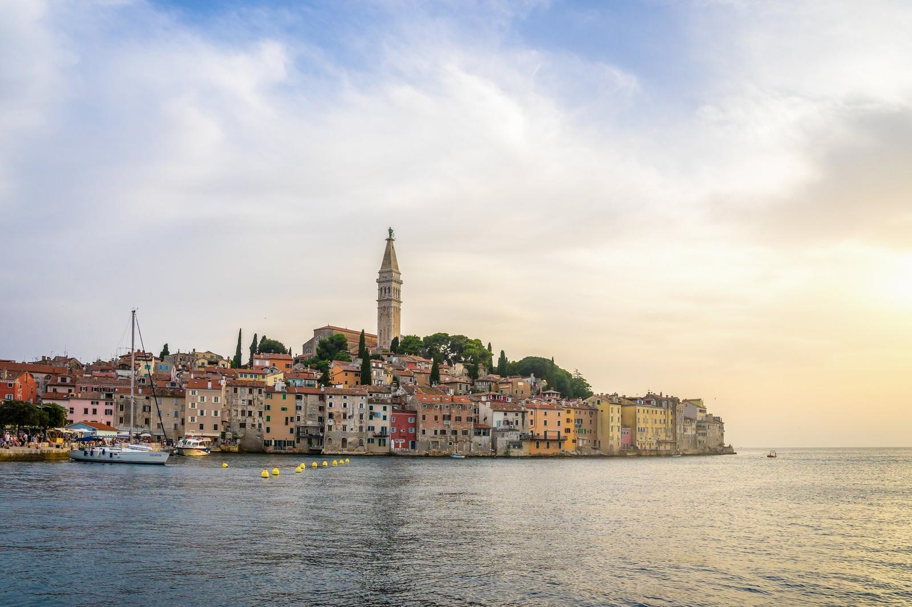

01Prima gita: Rovigno e Orsera
Rovigno è una delle città più fotografate della costa istriana: case color pastello che si arrampicano su una piccola penisola, stretti vicoli lastricati e il campanile della chiesa di Sant’Eufemia a dominare il tutto. Lungo il percorso ci fermiamo anche nella vicina Orsera.
- Orario: 09:00–18:00
- Navigazione lungo le Isole Brioni e il Canale di Leme, poi due ore a Orsera e due ore a Rovigno
- Pranzo a bordo (pesce o pollo alla griglia, insalata, pane) con vino, acqua e succhi a volontà
- Guida autorizzata in croato, inglese, tedesco e italiano
- Prezzo: 50 € a persona; bambini da 6 a 14 anni metà prezzo, sotto i 6 anni gratis
- Stagione: da Pasqua a ottobre. In alcune date la barca si ferma a Parenzo invece che a Orsera